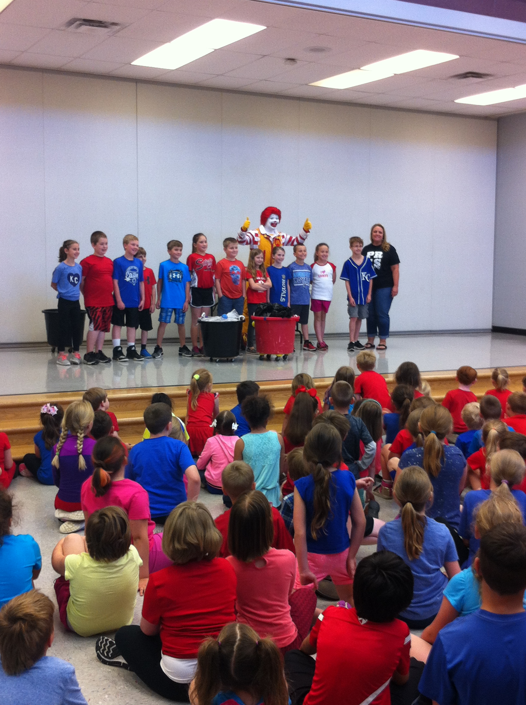
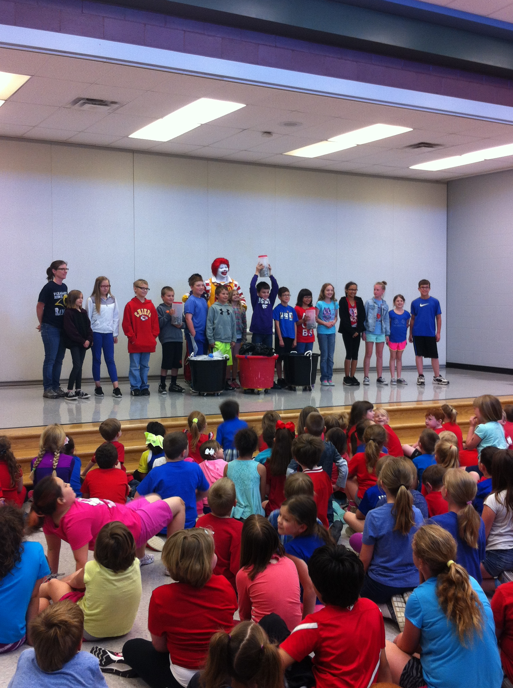

- DONATE
- News
- Events
- About Us
In January, Alyssa’s family received a message from the Remembering Alyssa community facebook page inquiring about a community service project for Mr. McCollum’s Government and Public Admission class at Pleasant Ridge High School. Kailey Nedwed, a sophomore at Pleasant Ridge inquired about Alyssa’s family assisting her in ideas to raise money in memory of Alyssa. Alyssa’s family gladly accepted and met with Kailey along with her mother, as well as Celeste Acree, a senior at Pleasant Ridge who is also involved with this project. This is truly a small world when Alyssa’s family discovered Kailey’s mother, Sarah, was in the same CNA class through Highland Community College with Alyssa in the summer of 2014. After meeting with Kailey, Celeste, and Kailey’s mother, the students decided to sponsor a monetary and supply donation drive that would be donated to the Ronald McDonald Wylie House. They chose this project because Alyssa was very dedicated to her volunteer work with the Ronald McDonald House and Children’s Mercy after her experience as a patient at Children’s Mercy. Kailey intends to pursue an EMT and Nursing degree after high school and has some similar interests just like Alyssa had at Children's Mercy Hospital. The monetary donations would be donated to Alyssa’s bedroom at the Wylie House for those families who are unable to contribute the suggested $10 donation per night to stay at the Ronald McDonald Wylie house. To help support the Ronald McDonald House in memory of Alyssa, Kailey and Celeste conducted a 50/50 raffle at the Pleasant Ridge home basketball games with proceeds going to the Ronald McDonald House in memory of Alyssa to her bedroom. They raised a total of $650.00 that was donated to the Ronald McDonald Wylie House for Alyssa’s bedroom. The school also collected several “wish list” supplies for the Ronald McDonald House.
On April 10, 2017, a group of students, Mr. McCollum – Government teacher, Mr. Metsker – Principal, and parents, attended the Ronald McDonald Houses in Kansas City for the day to present a check for Alyssa’s bedroom, donate their collected items, tour all three houses, as well as volunteer. The group prepared and served lunch which included a hot dog bar (Alyssa loved hotdogs) in the Ronald McDonald Family Room at Children’s Mercy Hospital. Thank you so much for all your support!
On June 2, 2016, our community lost a very special, caring person, Joan "Nana" O'Donnell. All of Alyssa’s family and Remembering Alyssa, Inc. would like to extend their deepest appreciation to the O'Donnell Family for honoring Alyssa in their memorial plans during the loss of their mother. Alyssa’s family would like to share this message they received from the O'Donnell Family: “Our family decided that the Justin Johnston Memorial Fund and the Alyssa Lane Hutchens Memorial Fund would be the perfect recipients for memorial donations received due to the passing of our beloved mother. Our mom loved the people of her community and surrounding towns. These memorial funds have taken heartbreaking tragedies and turned them into beneficial programs to help others. Our mom had personal relationships with the Johnston and Hutchens families and loved them dearly. Our mom would be thrilled to know that she was able to help promote their causes. We fully support the great things both of these funds are doing for the communities of Northeast Kansas.” Joan Marie (Barnett) O’Donnell, age 74, passed away peacefully at her home in Easton, Kansas, surrounded by her family on June 2, 2016. She was born on July 5, 1941 in Leavenworth, Kan. to Kenneth and Mary (Clauser) Barnett. Joan attended Catholic schools and graduated from Immaculata High School in 1959. On February 23, 1963 she married Lawrence W. O’Donnell, together, they had five children. When her children were young, Joan worked as a bus driver for Easton Bus Service. In 1994, she began working at the Frontier Community Credit Union and retired after 20 years. Upon her retirement, she became a Para Professional at Oskaloosa High School; where she had said this was her most cherished and rewarding job. Joan was a loving and dedicated mother and nana, and was well loved by all those who knew her. One of her favorite things to do was to watch her children and grandchildren play sports. Joan was famous for being the most vocal mom in the stands. Joan is survived by her children, Larry Jr., (Tammy), Michelle Eastburn (Todd), Kenny, (Julie), Todd, (Kitti), and Shannan Hadley (Bobby); 14 grandchildren Justin, Jeff, Kellie, Tanner, Cadie, Blake, Madison, Mackenzie, Colin, Quinn, Olivia, Broc, Norah and Claire and numerous nieces and nephews. She is preceded in death by her parents, sister Kathy Sargent and brother-in-law Richard Sargent. Joan will be missed by all those who knew her and remembered fondly with happy memories. Visitation will be held on Monday, June 6, 2016 from 6-8 p.m. at Davis Funeral Chapel. The rosary will be prayed at 7 p.m. Mass of Christian Burial will on Tuesday, June 7, 2016 at 10 a.m. at Immaculate Conception Church, burial will follow at Kickapoo Cemetery. Joan’s wish was to have her friends and family to dress casual to the visitation and funeral. In lieu of flowers, memorials may be given to the Justin Johnston Memorial Fund and Alyssa Hutchens Memorial Fund. Arrangements entrusted to Davis Funeral Chapel. Condolences may be left on Joan’s online guestbook at www.davisfuneralchapelinc.com
Grace Weimer Protein Project – Children in communities near Busolo, Uganda suffer from a lack of protein which can lead to kwashiorkor (big belly children). A small donation of $25 provides a child with a boiled egg two days a week for an entire year. This improves the quality of their life. Checks payable to: St. Mary Parish Attn: Grace Weimer Protein Project, 1813 Black River Road, Neillsville, WI 54456
Sponsor a Student - Less than 20% of children are able to finish high school because they are needed to help with family chores such as hauling water or working in the garden. With an annual income of less than $400, tuition can be a financial burden. The wells are being built next to schools to encourage school attendance so students can visit the well for clean water at the same time. Your donation of $100 covers tuition, uniform and lunch for one year at Lady of Guadalupe Secondary School. Please include an email address with payment to ensure you receive a photograph and short write-up of the student you are sponsoring. Checks payable to: St. Mary Parish Attn: Martha Opelt, 1813 Black River Road, Neillsville, WI 54456
Backpacks for Peace – “Hope” in the form of a small drawstring backpack filled with a toothbrush, notebook and pencil. Most children, if they have any school supplies, carry them in a small used garbage bag. Your donation of $25 provides 10 backpacks with supplies. Checks payable to: Remembering Jesse Parker, Inc. P.O. Box 606, Tomah, WI 54660. Please designate “Goal Africa – Backpacks”
Goal Africa – When Jake Parker, Jesse’s younger brother and Alyssa’s cousin, traveled to Busolo, Uganda in 2011, he was amazed how joyful the kids were when he pulled 15 used soccer balls out of his suitcase. Jake was saddened to see them playing with garbage bag balls, but he knew he could make a difference. In 2013, Jake began Goal Africa by sharing his experience in Uganda and asking local children to collect new and used soccer balls. Checks payable to: Remembering Jesse Parker, Inc. P.O. Box 606, Tomah, WI 54660. Please designate “Goal Africa – Soccer Balls”
Water=Life
With your help, we can drill wells and change lives. Your small donation of $20 can give a child clean water for up to 20 years. One new well to be drilled is $10,500. Donations are currently being accepted in hopes of a second well to be drilled in memory of Alyssa. You are changing lives one drop at a time. Checks payable to: Remembering Jesse Parker, Inc. P.O. Box 606, Tomah, WI 54660. Please designate “Alyssa’s New Well”
A portion of the funds raised from Alyssa’s Ride will go towards a second well to be drilled in memory of Alyssa in Uganda.
Interested in how Alyssa’s well was started? You can watch the entire journey that takes you to Africa as the Parker family was able to turn heartache into hope and carry on Jesse's (Alyssa’s cousin) dreams in a one hour special called "Tears to Water." http://www.news8000.com/tears-to-water Interested in fundraising for a well of your own, with a group or club, contact
If you have questions, please contact Marcus and Amy Hutchens: P. O. Box 4, Easton, KS 66020. Telephone number: 913-547-1168, Email:
How many of you have ever stayed in a Ronald McDonald House? How many of you have ever stayed in the hospital overnight? Did your parents stay with you? If any of you or your siblings had to be in the hospital for a long time because you were really sick or in an accident, wouldn’t you want your parents close to you? Did you know before Ronald McDonald Houses, that parents slept in hospital waiting rooms, in their cars or didn’t sleep at all? These five questions were asked at an all school assembly held on November 15, 2016, at Pleasant Ridge Elementary School. Alyssa’s mom and Alan Lubert, Community Relations Manager at Ronald McDonald House Charities of Kansas City, conducted a presentation to promote the collection of pop tabs and keys for the Ronald McDonald House.
While staying at the Ronald McDonald House, Alyssa Hutchens learned about collecting pop tabs for the house. She wanted to “give back” for everything they did for her family while she was sick. She started collecting pop tabs in 2011, and in 2013, she asked what else she could do to help? She became a Ronald McDonald House Volunteer, helped with events to raise money, and since she was already collecting pop tabs, they also recycle loose keys. After a successful 4-H leadership project collecting pop tabs and keys, Alyssa decided she wanted to join Alan Lubert, who conducts school presentations, and go to schools talking about the importance of collecting pop tabs and keys. In August 2013, she conducted school presentations as part of another 4-H project. In August 2014, Alyssa wanted to contact other schools to conduct presentations, but she never got the chance because she became sick again and was re-admitted to Children’s Mercy. Alyssa never recovered and then she passed away. But the donations of pop tabs and keys still keep coming in memory of Alyssa, nothing has stopped. Alyssa’s family thought since this school is where Alyssa began school, in fact, her class was the first Kindergarten class in this new school, they feel this school is special. In fact, Alyssa was so special; she has a bedroom in her name in the new Wylie Ronald McDonald House.
From November 16, 2016, to April 28, 2017, each classroom began collecting pop tabs and keys. The keys and pop tabs will be taken to the Ronald McDonald House to be recycled at a local recycling center. In about five months, Pleasant Ridge Elementary School collected a total of 135 pounds 7 ounces of pop tabs and 34 pounds 7 ounces of keys.
On May 12, 2017, a “special guest” Ronald McDonald returned to the school. He thanked all of the students for their hard work and performed some magic tricks. Ronald also shared a fun fact: Did you know 1 pound of tabs equals about 1,267 single tabs?? The total amount of tabs the school collected was over 135 pounds which equals over 171,045 single tabs! The students were explained how their collection of pop tabs and keys help families who stay at the Ronald McDonald House. Mrs. Jackson’s 3 rd grade class collected the most pop tabs with a total of 32 pounds. What a coincidence Mrs. Jackson was one of Alyssa’s elementary school teachers AND this class includes students Alyssa taught in Sunday school when they were in Kindergarten. Mrs. Funk’s 4 th grade class collected the most keys with a total of 15 pounds. For their outstanding work, a pizza party was held on May 17 for these two classes. A special thanks to Little Caesars as well as McDonald’s for ice cream coupons.
A special thanks to those who collect pop tabs and keys. You are a “fan-tab-ulous” group of collectors! This project will continue next school year so keep collecting over the summer and bring them to school in August. Keep pulling for the house that love built!
If you are interested in a school or public presentation, please contact or Alan Lubert at 816-842- 8321, ext. 118, .